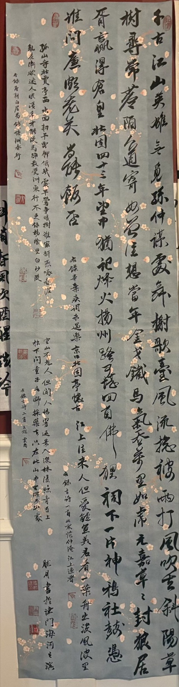
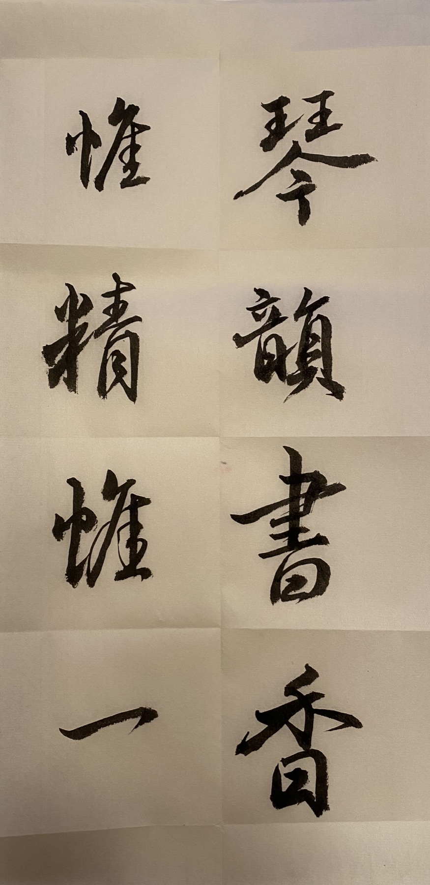
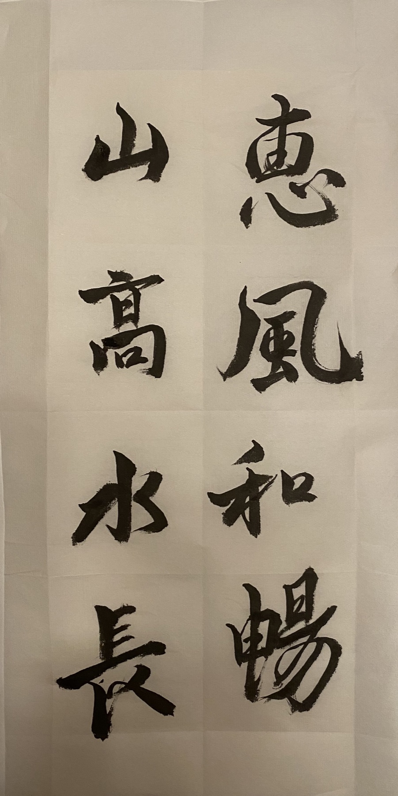
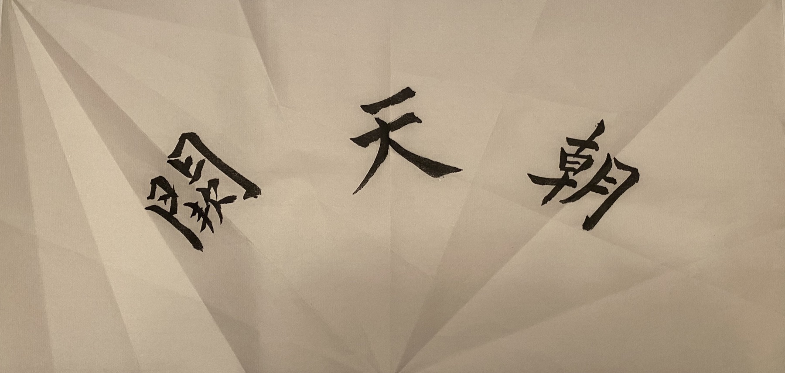
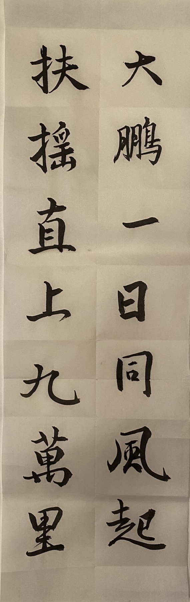
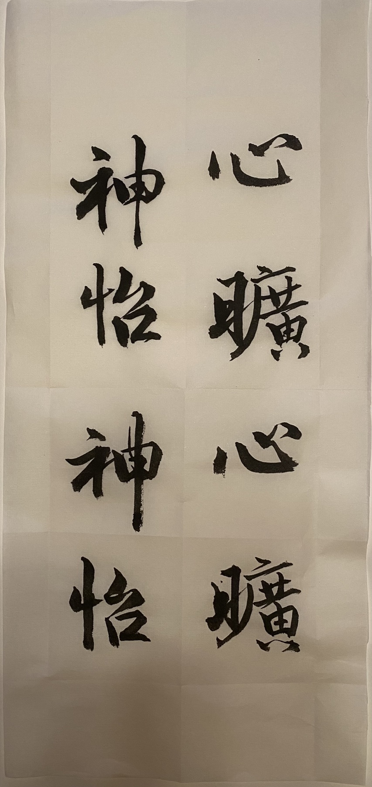
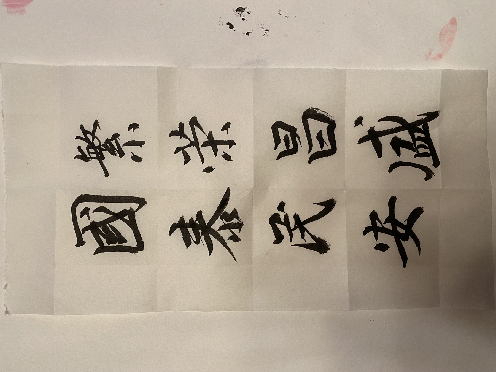
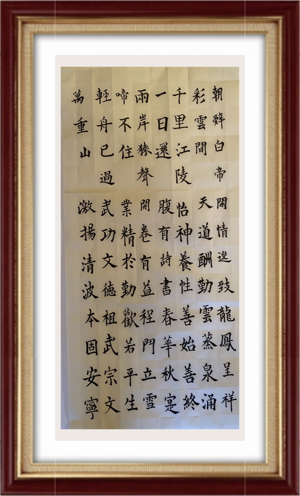
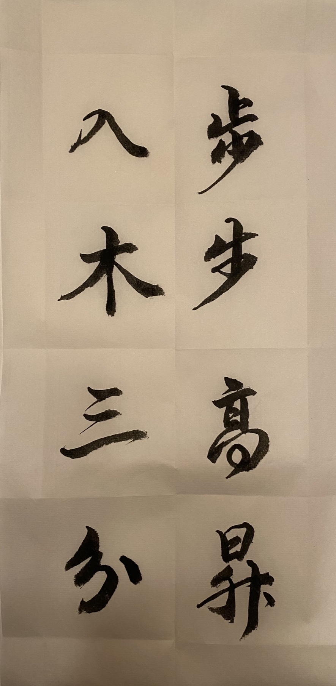
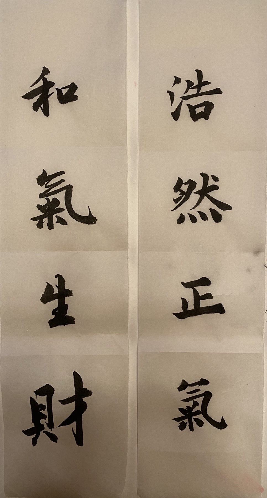

Words become
movement.字成于笔，
意生于墨。
These works move between poetry, paired blessings, and distilled idioms. Their formats guide the visit: vertical sheets invite a slow descent through each stroke, while horizontal works open the eye across a wider field.这些作品涵盖诗文、楹联与凝练成意的吉语。纵幅引人循笔势缓缓下行，横幅则舒展视线，让字与留白在更开阔的空间里相遇。
- Collection典藏Ten works十件作品
- Formats形制Vertical & horizontal纵横并陈
- Medium材质Ink on paper纸本水墨
Ink in ten voices墨分十韵
Read the room at the pace of the brush: a long opening scroll, vertical dialogues, and two broad horizontal pauses.循着运笔的节奏观展：长卷启篇，纵幅相答，两件横幅舒展其间。

赤壁赋 · 行书
Red Cliff Rhapsody · Running Script行书长卷
A monumental running-script scroll, animated by changing brush pressure, blossom motifs, and a constellation of red seals.长幅行书以轻重相生的笔势贯穿全卷，梅花点染其间，朱印错落成章。

琴韵书香
Qin Resonance, Fragrance of Books琴声雅韵，翰墨书香
Two measured columns pair the cultivated life of music and books with the discipline of single-minded refinement.双列大字并写“琴韵书香”与“惟精惟一”，以沉着笔意相映成趣。

惠风和畅
Gentle Wind in Harmony惠风徐来，和畅清雅
Broad, rounded turns give this familiar blessing the ease and openness of a mild spring wind.圆转舒展的笔画，为这句雅语写出春风般的温润与从容。

朝天阙
Toward the Celestial Court壮志凌云，直向天阙
Three monumental characters cross an open horizontal field, their spare spacing amplifying the phrase’s upward resolve.三字横陈于大片留白之中，疏朗章法更显昂扬气势。

大鹏一日同风起
The Great Peng Rises with the Wind扶摇直上九万里
Li Bai’s soaring couplet ascends in paired columns, matching the mythical bird’s flight with an assured, climbing rhythm.李白名句分列而书，笔势层层上扬，与大鹏扶摇直上的意象相应。

心旷神怡
Heart Open, Spirit at Ease心境开阔，神情愉悦
The phrase appears twice, turning repetition into a quiet study of balance, variation, and release.同一句吉语两度落墨，在复写中体会结构的均衡、变化与舒展。

繁荣昌盛 · 国泰民安
Flourishing Prosperity · Peace for the Nation繁荣兴盛，家国安宁
Two civic blessings share one field, their alternating columns binding prosperity to collective peace.两组家国吉语同幅相应，以交替列阵将繁盛与安宁连为一体。

白帝城诗文
Baidi City & Classical Verses诗文集句
A framed regular-script composition opens with Li Bai’s “Early Departure from Baidi City” before gathering further classical and auspicious lines.楷书镜框以李白《早发白帝城》开篇，并汇入多则古典诗句与吉语。

步步高升 · 入木三分
Rising Step by Step · Ink to the Bone进益不止，笔力深透
Aspiration meets craft in two columns: steady advancement beside an idiom praising penetrating brushwork.“步步高升”与“入木三分”分列相对，一写进取，一赞笔力。

浩然正气 · 和气生财
Noble Spirit · Harmony Brings Prosperity守正养气，以和致祥
Moral strength and generous harmony stand side by side, closing the gallery with firmness tempered by warmth.浩然之气与和善之道并列相守，以刚健而温厚的气息为全展收束。